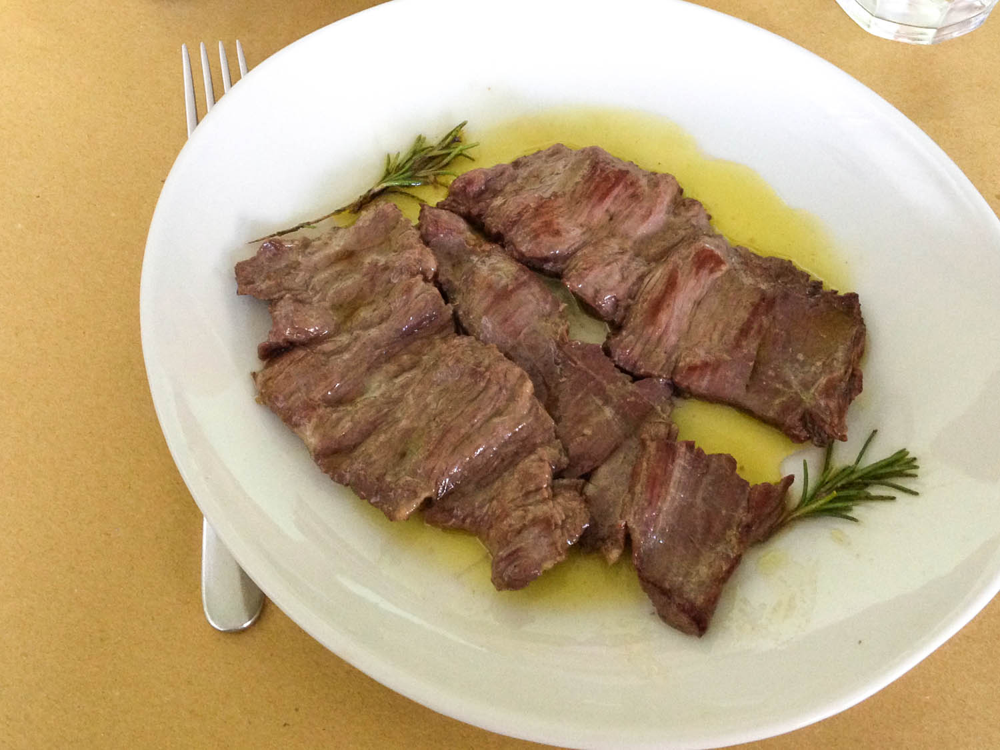
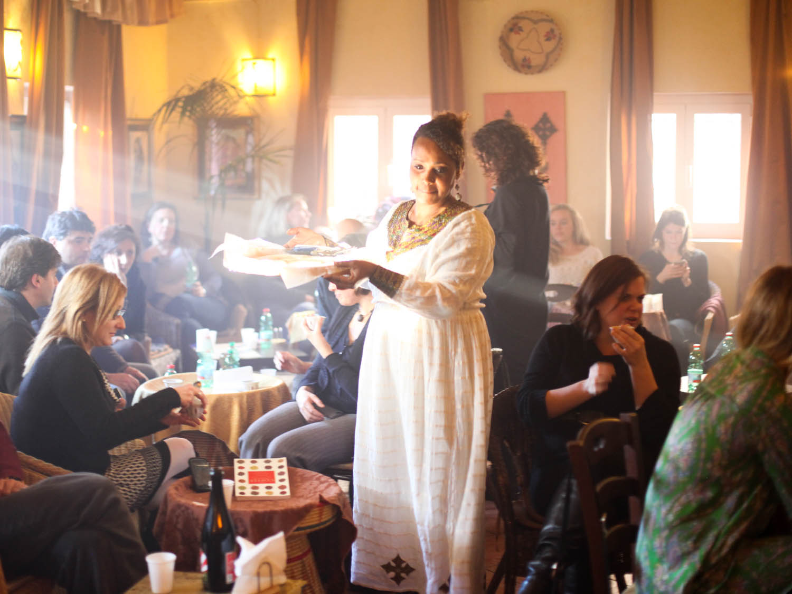

The real deal on eating like a Roman.It takes years to scratch the surface of living and eating in Rome,
not to mention the countless strata beneath. But if you only have a few days in the Italian capital and want to eat well,
a bit of planning, a bus pass, and a sense of adventure can go a long way to ensuring a delicious trip. While it may be tempting
to stick around the big landmarks and eat exclusively in the historical center, the best food in town can actually
be found beyond the city's 3rd century Aurelian Walls—that's where the vast majority of Rome dwellers live, eat, and shop for food.
Classic Rustic Roman: L'Arcangelo

Arcangelo Dandini is the one of Rome's most beloved chefs, a man who embraces seasonal, traditional recipes
of the Italian capital. Though he is not precisely a Rome native—he grew up in Rocca Priora, a town on a hill 15 miles
southeast of the city—he cooks Roman classics, as well as the specialities of his home town; due to its distance from Rome
and its geography, Rocca Priora's Roman cuisine is not identical to its urban neighbor. His dishes are inspired by time spent
in family members' home and restaurant kitchens,but he also seeks to recreate specialties of the Roman Renaissance and even ancient delicacies.
A Real (Wallet-friendly) Osteria: Osteria Bonelli
There was a time when the word osteria signified a simple eatery with paper on the tables,
a small, seasonal menu, and a single glass for both water in wine. Now the word is trendy and has
been co-opted by the city's posh restaurants. But at this busy neighborhood establishment in Tor Pignattara,
Osteria Bonelli stays true to its name.The menu, which is written on folding chalkboards, circulates through
the osteria's dining room listing dishes rooted in Roman peasant cooking like horse skirt steak and stewed tripe.
On Fridays, expect to find grilled and fried fish specials, while the daily menu features a long list of vegetable
side dishes, which Romans believe promotes digestion, a pragmatic approach to a long and meaty meal.Osteria Bonelli is
located in eastern Rome and well beyond the third century Aurelian walls. To get there, hop on the Giardinetti-bound
commuter train from Termini or Porta Maggiore and get off at the Berardi stop.

Arcangelo's greatest successes are when he keeps things simple. His potato gnocchi, which are dressed
with a light tomato and guanciale (cured pork jowl) sauce, are the absolutely lightest in town, and his stewed
tripe simmered with tomato and mint has few rivals, while his braised oxtail is enhanced with a dusting of cocoa.
Stick to Arcangelo's classics and be sure to kick off the meal with his suppli',fried rice balls studded with mozzarella
and chopped chicken gizzards.
Something Different: Ethiopian at mesob
You may, at some point on your trip, tire of pasta. In that case it's worth sampling one of the foreign cuisines Rome
does well, including Ethiopian, an import that traces back to Italy's invasion of Africa in WWII.In an unassuming courtyard off the
busy via Prenestina, Kuki Tadese, the chef and owner of Mesob, reproduces family recipes of richly spiced and deeply flavored vegetable
stews. Each dish is served on a platter lined with injera, a spongy sourdough bread, in the traditional Ethiopian way. Strips of injera
are provided for picking up the stews, which are eaten with your hands. There are some meat dishes, too, like a spicy,
cardamomdoro wot made of chicken and hard boiled eggs,but these are accompanied with liberal helpings of vegetarian and
vegan vegetable dishes.

A trip to Mesob should not be treated as simply a break from Rome's steady parade of pasta dishes. It isn't just one
of the best non-Roman dining options in town; it's one of the best restaurants in the city, period, yet it remains
unpretentious and affordable.To get there, take the 5 or 14 tram from Termini and get off at Giovanale, one stop past Piazzale Prenestina.
Best Restaurants Information
| Name Of Restaurant | Address | Contact | Website | Map |
|---|---|---|---|---|
| Flavio al Velavevodetto | Via di Monte Testaccio, 97 | +39 06 574 4194 | Website | map |
| Armando al Pantheon | Salita dè Crescenzi, 31 | +39 06 6880 3034 | Website | map |
| Mordi e Vai | Mercato di Testaccio Box 15 | +393391343344 | Website | map |
| Osteria Bonelli | Viale dell'Acquedotto Alessandrino, 172 | +39 329 863 3077 | Website | map |
| L'Arcangelo | Via Giuseppe Gioacchino Belli, 59, 00193 Roma, Italy | +39 06 321 0992 | Website | map |
| Pro Locl DOL | Via Domenico Panaroli 35 | +39 06 2430 0765 | Website | map |
| Litro | Via Fratelli Bonnet 5 | +39 0645447639 | Website | map |
| Mesob | Via Prenestina 118 | +39 0645447639 | Website | map |